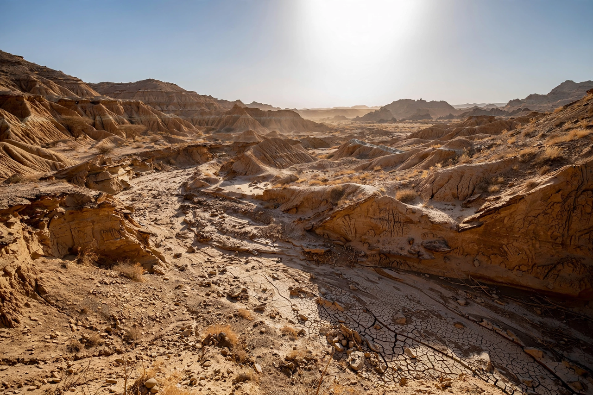

| Dikika | |
|---|---|
| Location | Afar Region, Ethiopia |
| Region | Afar Triangle / Great Rift Valley |
| Key find | "Selam" (DIK-1-1), Australopithecus afarensis juvenile |
| Age of deposits | approx. 3.4–3.2 million years |
| Project | Dikika Research Project (founded 1999) |

Dikika is a palaeoanthropological research area in the Afar Region of Ethiopia, in the lower Awash valley of the Great Rift Valley. It is best known as the locality where the Dikika Research Project, led by Ethiopian scientist Zeresenay Alemseged, recovered "Selam" — the remarkably complete skeleton of a young Australopithecus afarensis child, one of the most complete early hominin juveniles ever found.
The fossil, catalogued as DIK-1-1 and nicknamed Selam (meaning "peace" in Amharic) — and sometimes called "Lucy's baby," though it predates Lucy — was first sighted on 10 December 2000 by team member Tilahun Gebreselassie, embedded in a sandstone block on a hillside at Dikika. After years of painstaking preparation, the specimen was announced in Nature in 2006. Dated to about 3.3 million years ago, Selam was a female child of roughly three years of age at death.
Selam preserves much of the skull, the ribcage, parts of the legs and even the hyoid bone — a rare survival in the hominin record. The anatomy is a mosaic: the legs and knee show committed bipedal walking, while the curved finger bones and the gorilla-like shoulder blade suggest retained climbing ability. The brain size, about 330–430 cm³, also allowed scientists to model brain growth in early hominins, which appears to have been prolonged, though not to the modern human extent.
In 2010, researchers from the Dikika project reported bones from the nearby DIK-55 locality, about 3.4 million years old, bearing marks they interpreted as stone-tool cut marks — which would push tool use back well before the oldest known Oldowan tools. The interpretation has been debated, with some researchers attributing the marks to trampling damage.
The Dikika deposits lie south of the better-known Hadar locality, across the Awash River, in sediments of the Hadar Formation. The area continues to yield fossils of fauna and hominins documenting life in the Afar basin during the Pliocene.